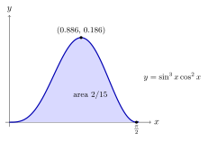
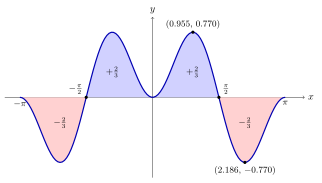
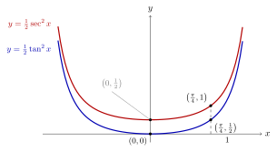

8.3 Trigonometric Integrals¶
Guiding question
Integrals of powers and products of the six trigonometric functions turn up everywhere: in areas and volumes, in the trigonometric substitutions of the next section, and in the study of waves and vibrations. They look different from one another, but a small number of ideas handles all of them. For \(\sin^mx\cos^nx\) and \(\tan^mx\sec^nx\) the idea is to split off one factor that is the derivative of a function of the rest, and then use a Pythagorean identity so that a substitution \(u=\cos x\), \(u=\sin x\), \(u=\tan x\) or \(u=\sec x\) applies. When that is impossible (both powers even, or an even power of tangent with an odd power of secant), we use the power-reducing identities or a reduction formula, which comes from integration by parts. For products such as \(\sin3x\cos5x\) the product-to-sum identities turn a product into a sum. We prove every identity from the angle-addition formulas, prove every method, and end with the orthogonality relations for sines and cosines, which are the starting point of Fourier series. Calculus I facts used, all by name: the derivatives of the six trigonometric functions, the Chain Rule, the Fundamental Theorem of Calculus, the Pythagorean identity \(\sin^2x+\cos^2x=1\) and the angle-addition formulas for sine and cosine (from precalculus), and the fact that two antiderivatives on an interval differ by a constant. From Section 8.1 we use substitution (Theorem 8.1.1), the table of basic formulas and the four trigonometric integrals (Theorem 8.1.7); from Section 8.2 we use integration by parts (Theorem 8.2.1) and the reduction formulas for \(\sin^nx\) and \(\cos^nx\) (Theorem 8.2.11). No appendix section is needed.
By the end of this section you should be able to:
-
derive the double-angle, power-reducing and product-to-sum identities from the angle-addition formulas;
-
integrate \(\sin^mx\cos^nx\) by splitting off a factor (an odd power) or by power-reducing identities (both powers even);
-
integrate \(\tan^mx\sec^nx\) and \(\cot^mx\csc^nx\), and say which case needs a reduction formula and why;
-
state and prove the reduction formulas for \(\tan^nx\), \(\sec^nx\), \(\cot^nx\) and \(\csc^nx\), and evaluate \(\int\sec^3x\,dx\);
-
integrate products \(\sin mx\cos nx\), \(\sin mx\sin nx\), \(\cos mx\cos nx\) and prove the orthogonality relations on an interval of length \(2\pi\);
-
check every answer by differentiating, and recognize answers that differ by a constant and the common errors.
The identities we use, proved¶
Every method in this section is an identity followed by a substitution, so we first make sure of the identities. We start from the Pythagorean identity and the angle-addition formulas, which we take as known:
Theorem 8.3.1: Trigonometric identities
For all real numbers \(x\), \(A\) and \(B\) (where the quantities are defined):
(1) Pythagorean. \(\sin^2x+\cos^2x=1\), \(\;1+\tan^2x=\sec^2x\), \(\;1+\cot^2x=\csc^2x\).
(2) Double-angle. \(\sin2x=2\sin x\cos x\) and \(\cos2x=\cos^2x-\sin^2x=2\cos^2x-1=1-2\sin^2x\).
(3) Power-reducing. \(\displaystyle\sin^2x=\frac{1-\cos2x}2,\qquad\cos^2x=\frac{1+\cos2x}2\).
(4) Product-to-sum.
Proof. (1) The first identity is the one we assumed (it also follows from the angle-addition formula: with \(B=A\), \(\cos(A-A)=\cos0=1\) equals \(\cos^2A+\sin^2A\)). Where \(\cos x\ne0\), divide it by \(\cos^2x\): \(\frac{\sin^2x}{\cos^2x}+1=\frac1{\cos^2x}\), which is \(\tan^2x+1=\sec^2x\). Where \(\sin x\ne0\), divide by \(\sin^2x\): \(1+\cot^2x=\csc^2x\).
(2) Put \(A=B=x\) in the formulas for \(\sin(A+B)\) and \(\cos(A+B)\): \(\sin2x=\sin x\cos x+\cos x\sin x=2\sin x\cos x\) and \(\cos2x=\cos x\cos x-\sin x\sin x=\cos^2x-\sin^2x\). Replacing \(\sin^2x\) by \(1-\cos^2x\) gives \(\cos2x=2\cos^2x-1\), and replacing \(\cos^2x\) by \(1-\sin^2x\) gives \(\cos2x=1-2\sin^2x\).
(3) Solve \(\cos2x=2\cos^2x-1\) for \(\cos^2x\) and \(\cos2x=1-2\sin^2x\) for \(\sin^2x\).
(4) Add and subtract the formulas for \(\sin(A+B)\) and \(\sin(A-B)\): \(\sin(A+B)+\sin(A-B)=2\sin A\cos B\), which is the first identity. Add and subtract the formulas for \(\cos(A-B)=\cos A\cos B+\sin A\sin B\) and \(\cos(A+B)=\cos A\cos B-\sin A\sin B\): the sum is \(2\cos A\cos B\) and the difference \(\cos(A-B)-\cos(A+B)\) is \(2\sin A\sin B\). Divide by \(2\). ◻ ∎
The power-reducing identities lower an exponent at the price of doubling the angle, and the product-to-sum identities turn a product into a sum; both are exactly what an integral needs.
Pause and think 8.3.1: Which sign?
The two power-reducing identities differ by one sign. Without looking at the theorem, decide which of \(\frac{1\pm\cos2x}2\) equals \(\sin^2x\) and which equals \(\cos^2x\), by testing a single value of \(x\) in each.
Answer and discussion
At \(x=0\) we have \(\sin^20=0\) and \(\cos^20=1\). Since \(\cos0=1\), the expression \(\frac{1-\cos0}2=0\) matches \(\sin^2\), and \(\frac{1+\cos0}2=1\) matches \(\cos^2\). So \(\sin^2x=\frac{1-\cos2x}2\) and \(\cos^2x=\frac{1+\cos2x}2\) (“sine is minus”). A second test at \(x=\frac\pi2\) agrees: \(\sin^2\frac\pi2=1=\frac{1-\cos\pi}2\).
Powers of sine and cosine¶
Section 8.2 gave the reduction formulas for \(\int\sin^nx\,dx\) and \(\int\cos^nx\,dx\) (Theorem 8.2.11). Here we treat the general product \(\sin^mx\cos^nx\) and the first method that needs no integration by parts. The idea: if one of the exponents is odd, set one factor aside, because that factor is \(\pm\) the derivative of the other function; the remaining even power converts to the other function by \(\sin^2x=1-\cos^2x\).
Theorem 8.3.2: Integrals of \(\sin^mx\cos^nx\)
Let \(m\) and \(n\) be integers, on an interval where the integrand is defined.
(1) \(m\) odd and positive, \(m=2j+1\) with \(j\ge0\). With \(u=\cos x\),
(2) \(n\) odd and positive, \(n=2j+1\) with \(j\ge0\). With \(u=\sin x\),
(3) \(m\) and \(n\) both even and nonnegative. The integral equals a sum of constant multiples of integrals \(\int\cos^i2x\,dx\) with \(0\le i\le\frac{m+n}2\), each of which can be evaluated by (2) when \(i\) is odd and by repeating this step when \(i\) is even.
In (1) and (2) the right-hand side is a finite sum of powers of \(u\) (expand \((1-u^2)^j\) by the binomial theorem), so each term is integrated by formula (2) of Section 8.1, or gives \(\ln\lvert u\rvert\) when the exponent is \(-1\). After integrating, substitute back \(u=\cos x\) or \(u=\sin x\).
Proof. (1) Write \(\sin^mx=\sin^{2j}x\sin x=\big(\sin^2x\big)^j\sin x=\big(1-\cos^2x\big)^j\sin x\) by Theorem 8.3.1(1). Then \(\sin^mx\cos^nx\,dx=\big(1-\cos^2x\big)^j\cos^nx\,(\sin x\,dx)\). Let \(u=\cos x\), so \(du=-\sin x\,dx\); by the substitution rule (Theorem 8.1.1) the integral becomes \(-\int(1-u^2)^ju^n\,du\).
(2) Write \(\cos^nx=\big(1-\sin^2x\big)^j\cos x\) and let \(u=\sin x\), \(du=\cos x\,dx\).
(3) Since \(m\) and \(n\) are even, \(\sin^mx\cos^nx=\big(\sin^2x\big)^{m/2}\big(\cos^2x\big)^{n/2}=\left(\frac{1-\cos2x}2\right)^{m/2}\left(\frac{1+\cos2x}2\right)^{n/2}\) by Theorem 8.3.1(3). Multiplying out, this is a polynomial in \(\cos2x\) of degree \(d=\frac{m+n}2\), say \(\sum_{i=0}^dc_i\cos^i2x\). We show by strong induction on \(d\) that every integral \(\int\cos^i2x\,dx\) with \(i\le d\) can be evaluated. If \(i=0\) the integral is \(x\). If \(i\) is odd, \(i=2l+1\), write \(\cos^i2x=\big(1-\sin^22x\big)^l\cos2x\) and let \(w=\sin2x\), \(dw=2\cos2x\,dx\): the integral is \(\frac12\int(1-w^2)^l\,dw\), a polynomial. If \(i\ge2\) is even, let \(w=2x\) and use Theorem 8.3.1(3): \(\int\cos^i2x\,dx=\frac12\int\cos^iw\,dw=\frac12\int\left(\frac{1+\cos2w}2\right)^{i/2}dw\), which is a polynomial in \(\cos2w\) of degree \(\frac i2\le\frac d2<d\) (because \(d\ge1\) here), and the induction hypothesis applies to it. ◻ ∎
Procedure 8.3.3: Powers of sine and cosine
-
If the power of \(\sin x\) is odd, set aside one factor \(\sin x\), convert the rest to \(\cos x\) with \(\sin^2x=1-\cos^2x\), and let \(u=\cos x\).
-
If the power of \(\cos x\) is odd, set aside one factor \(\cos x\), convert the rest to \(\sin x\) with \(\cos^2x=1-\sin^2x\), and let \(u=\sin x\). (If both are odd, either works; take the smaller power of the one you convert.)
-
If both powers are even, use \(\sin^2x=\frac{1-\cos2x}2\) and \(\cos^2x=\frac{1+\cos2x}2\), expand, and repeat with the powers of \(\cos2x\). Remember that \(\int\cos^22x\,dx\) again needs the power-reducing identity, with \(4x\).
-
A single power \(\sin^nx\) or \(\cos^nx\) may be done by Theorem 8.2.11; the formulas of Section 8.2 are best for large \(n\).
-
Check by differentiating.
Example 8.3.4: A square of the sine of a multiple angle
Find \(\int\sin^23x\,dx\), and compare with the reduction formula of Section 8.2.
Solution. Both powers are even (the power of \(\cos\) is \(0\)), so we use \(\sin^2w=\frac{1-\cos2w}2\) with \(w=3x\):
Here \(\int\cos6x\,dx=\frac{\sin6x}6\) is formula (3) of Section 8.1 with \(a=6\).
Compare. Theorem 8.2.11 with \(n=2\) and \(w=3x\) gives \(\int\sin^2w\,dw=-\frac{\sin w\cos w}2+\frac w2\), so \(\int\sin^23x\,dx=\frac13\left(-\frac{\sin3x\cos3x}2+\frac{3x}2\right)=\frac x2-\frac{\sin3x\cos3x}6\). This agrees with the first answer, because \(\sin6x=2\sin3x\cos3x\) (Theorem 8.3.1(2)) gives \(\frac{\sin6x}{12}=\frac{\sin3x\cos3x}6\). Check by an area. Over one period of \(\sin3x\) (\(0\le x\le\frac{2\pi}3\)) the average of \(\sin^23x\) is \(\frac12\), so \(\int_0^{2\pi/3}\sin^23x\,dx\) should be \(\frac12\cdot\frac{2\pi}3=\frac\pi3\). The antiderivative gives \(\frac{\pi}3-\frac{\sin4\pi}{12}-0=\frac\pi3\).
Example 8.3.5: An odd power of sine, and the area under the curve
Evaluate \(\displaystyle\int_0^{\pi/2}\sin^3x\cos^2x\,dx\). This is the area under \(y=\sin^3x\cos^2x\) (Figure 1).
Solution. The power of \(\sin x\) is odd, \(m=3=2\cdot1+1\) (so \(j=1\)) and \(n=2\). Set aside one \(\sin x\) and convert \(\sin^2x=1-\cos^2x\) (Pythagorean identity):
Let \(u=\cos x\), \(du=-\sin x\,dx\). Then \(\int\sin^3x\cos^2x\,dx=-\int\big(1-u^2\big)u^2\,du=-\int\big(u^2-u^4\big)du=-\frac{u^3}3+\frac{u^5}5+C\), so
Check by differentiating. By the Chain Rule, \(\frac{d}{dx}\left[-\frac{\cos^3x}3+\frac{\cos^5x}5\right]=\cos^2x\sin x-\cos^4x\sin x=\cos^2x\sin x\big(1-\cos^2x\big)=\sin^3x\cos^2x\).
The definite integral. At \(x=\frac\pi2\) we have \(\cos x=0\), so the antiderivative is \(0\); at \(x=0\) we have \(\cos x=1\), so it is \(-\frac13+\frac15=-\frac2{15}\). Hence
Plausibility. The curve starts at \(0\), rises to a maximum and returns to \(0\). Its maximum is at \(\tan^2x=\frac32\) (set the derivative \(\sin^2x\cos x\left(3\cos^2x-2\sin^2x\right)\) equal to \(0\)), where \(\sin^2x=\frac35\), \(\cos^2x=\frac25\), and the height is \(\frac25\left(\frac35\right)^{3/2}\approx0.1859\). The area is less than \(0.1859\cdot\frac\pi2\approx0.292\), and \(0.1333\) is a sensible fraction of it.

Figure 1. The region under \(y=\sin^3x\cos^2x\) on \(\left[0,\frac\pi2\right]\). The maximum is at \(\tan x=\sqrt{3/2}\), and the area is \(\frac2{15}\).
Knowledge Check 8.3.1: An odd power of cosine
Evaluate \(\int\sin^2x\cos^3x\,dx\). Say which factor you set aside, and check by differentiating.
Example 8.3.6: Both powers even
Find \(\int\sin^2x\cos^4x\,dx\).
Solution. Both powers are even. Group \(\sin^2x\cos^4x=\big(\sin x\cos x\big)^2\cos^2x\) and use \(\sin x\cos x=\frac12\sin2x\) (double angle) and \(\cos^2x=\frac{1+\cos2x}2\):
For the first term use \(\sin^22x=\frac{1-\cos4x}2\). For the second term the power of \(\sin2x\) is \(2\) but there is a factor \(\cos2x\) to the first power: let \(w=\sin2x\), \(dw=2\cos2x\,dx\). Therefore
(The coefficients: \(\frac18\cdot\frac12\cdot\frac{w^3}3=\frac{w^3}{48}\) and \(\frac1{16}\cdot\frac{\sin4x}4=\frac{\sin4x}{64}\).)
Check by differentiating. \(\frac{d}{dx}\left[\frac x{16}-\frac{\sin4x}{64}+\frac{\sin^32x}{48}\right]=\frac1{16}-\frac{\cos4x}{16}+\frac{\sin^22x\cos2x}8\). Since \(1-\cos4x=2\sin^22x\), the first two terms give \(\frac{\sin^22x}8\), and the sum is \(\frac{\sin^22x}8(1+\cos2x)=\frac{\sin^22x}8\cdot2\cos^2x=\frac{4\sin^2x\cos^2x\cdot\cos^2x}4=\sin^2x\cos^4x\).
Example 8.3.7: An even power under a root: the absolute value
Evaluate (a) \(\displaystyle\int_0^{\pi}\big(1-\cos2x\big)^{3/2}\,dx\) and (b) \(\displaystyle\int_0^{2\pi}\big(1-\cos2x\big)^{3/2}\,dx\).
Solution. By the power-reducing identity, \(1-\cos2x=2\sin^2x\). A power \(\frac32\) of a square needs care: for \(a\ge0\) we have \(\big(a^2\big)^{3/2}=a^3\), but for a number \(s\) of either sign \(\big(s^2\big)^{3/2}=\lvert s\rvert^3\). Hence
(a) On \([0,\pi]\) we have \(\sin x\ge0\), so \(\lvert\sin x\rvert^3=\sin^3x\). By Theorem 8.3.2(1) (or Section 8.2, \(n=3\)), an antiderivative of \(\sin^3x\) is \(-\cos x+\frac{\cos^3x}3\), whose change over \([0,\pi]\) is \(\left(1-\frac13\right)-\left(-1+\frac13\right)=\frac43\). So
(b) On \([\pi,2\pi]\) we have \(\sin x\le0\), so \(\lvert\sin x\rvert^3=-\sin^3x\), and the integral over \([\pi,2\pi]\) is again \(\frac{8\sqrt2}3\) (the graph is the same shape, by the symmetry \(\lvert\sin(x+\pi)\rvert=\lvert\sin x\rvert\)). The total is \(\frac{16\sqrt2}3\approx7.5425\). If we had used \(\sin^3x\) without the absolute value we would have found \(\int_0^{2\pi}\sin^3x\,dx=0\), which is impossible for a positive integrand.
Reduction formulas for \(\tan^nx\) and \(\sec^nx\)¶
Section 8.2 reduced \(\sin^nx\) and \(\cos^nx\) to lower powers. The same can be done for the tangent and the secant. The tangent formula comes from the identity \(\tan^2x=\sec^2x-1\) and a substitution; the secant formula needs integration by parts.
Theorem 8.3.8: Reduction formulas for \(\tan^nx\) and \(\sec^nx\)
For every integer \(n\ge2\), on any interval where the functions are defined,
Consequently every \(\int\tan^nx\,dx\) reduces to \(\int1\,dx=x\) or to \(\int\tan x\,dx=\ln\lvert\sec x\rvert\), and every \(\int\sec^nx\,dx\) with \(n\) odd reduces to \(\int\sec x\,dx=\ln\lvert\sec x+\tan x\rvert\) (Theorem 8.1.7). In particular
Proof. Tangent. By Theorem 8.3.1(1),
In the first term let \(u=\tan x\), \(du=\sec^2x\,dx\); since \(n\ge2\) the exponent \(n-2\ge0\) is not \(-1\), so \(\int u^{n-2}\,du=\frac{u^{n-1}}{n-1}\). This gives the formula.
Secant. Write \(\sec^nx=\sec^{n-2}x\cdot\sec^2x\) and use parts (Theorem 8.2.1) with \(u=\sec^{n-2}x\) and \(dv=\sec^2x\,dx\). By the Chain Rule, \(du=(n-2)\sec^{n-3}x\cdot\sec x\tan x\,dx=(n-2)\sec^{n-2}x\tan x\,dx\), and \(v=\tan x\). Hence
Replace \(\tan^2x=\sec^2x-1\): the last integral is \(\int\sec^nx\,dx-\int\sec^{n-2}x\,dx\). So
The unknown integral appears on both sides. Add \((n-2)\int\sec^nx\,dx\) to both sides:
Divide by \(n-1\ne0\).
The consequences. Applying the tangent formula repeatedly lowers the exponent by \(2\) each time, ending at \(\tan^0x=1\) (when \(n\) is even) or \(\tan^1x\) (when \(n\) is odd). Applying the secant formula to odd \(n\) ends at \(\sec^1x\). For \(n=3\): \(\int\sec^3x\,dx=\frac{\sec x\tan x}2+\frac12\int\sec x\,dx\), and \(\int\sec x\,dx=\ln\lvert\sec x+\tan x\rvert+C\). ◻ ∎
Example 8.3.9: Reduction formulas for \(\tan^4x\) and \(\sec^5x\)
Find (a) \(\int\tan^4x\,dx\) and (b) \(\int\sec^5x\,dx\).
Solution. (a) Apply Theorem 8.3.8 with \(n=4\), then \(n=2\):
Substituting the second result into the first,
Check. \(\frac{d}{dx}\left[\frac{\tan^3x}3-\tan x+x\right]=\tan^2x\sec^2x-\sec^2x+1=\tan^2x\sec^2x-\tan^2x=\tan^2x\big(\sec^2x-1\big)=\tan^4x\).
(b) With \(n=5\), then \(n=3\):
Now insert \(\int\sec^3x\,dx=\frac{\sec x\tan x}2+\frac12\ln\lvert\sec x+\tan x\rvert\):
Multiplying out,
Knowledge Check 8.3.2: A reduction formula for the tangent
Use Theorem 8.3.8 to evaluate \(\int\tan^3x\,dx\), and check your answer by differentiating.
Products \(\tan^mx\sec^nx\)¶
For a product of tangent and secant we split off a factor that is the derivative of one of them: \(\frac{d}{dx}\tan x=\sec^2x\) and \(\frac{d}{dx}\sec x=\sec x\tan x\).
Theorem 8.3.10: Integrals of \(\tan^mx\sec^nx\)
Let \(m,n\ge0\) be integers, on an interval where the integrand is defined.
(1) \(n\) even and positive, \(n=2j+2\) with \(j\ge0\). With \(u=\tan x\),
(2) \(m\) odd and \(n\ge1\), \(m=2i+1\) with \(i\ge0\). With \(u=\sec x\),
(3) \(m\) even and \(n\) odd. Writing \(\tan^2x=\sec^2x-1\) turns the integrand into a sum of constant multiples of odd powers \(\sec^{n+2l}x\), each of which is integrated by Theorem 8.3.8.
(4) \(n=0\). \(\int\tan^mx\,dx\) is given by Theorem 8.3.8.
These four cases cover every pair \(m,n\ge0\).
Proof. (1) Write \(\sec^nx=\sec^{2j}x\sec^2x=\big(1+\tan^2x\big)^j\sec^2x\) (Theorem 8.3.1(1)). Then
let \(u=\tan x\), \(du=\sec^2x\,dx\) and use Theorem 8.1.1.
(2) Write \(\tan^mx\sec^nx=\tan^{2i}x\,\sec^{n-1}x\cdot\big(\sec x\tan x\big)=\big(\sec^2x-1\big)^i\sec^{n-1}x\cdot\big(\sec x\tan x\big)\); let \(u=\sec x\), \(du=\sec x\tan x\,dx\). This needs \(n\ge1\) so that a factor \(\sec x\) is available.
(3) With \(m=2i\) the integrand is \(\big(\sec^2x-1\big)^i\sec^nx\). By the binomial theorem this is
and each exponent \(n+2l\) is odd.
(4) is Theorem 8.3.8. Cases: if \(n\ge2\) is even, (1) applies; if \(n\) is odd and \(m\) is odd, (2); if \(n\) is odd and \(m\) is even, (3); if \(n=0\), (4); and \(n=1\) with \(m\) odd is in (2) (with \(n-1=0\)). Nothing else remains. ◻ ∎
Procedure 8.3.11: Powers of tangent and secant
-
Even power of secant (\(n\ge2\)). Set aside \(\sec^2x\), write the rest of the secant power as a polynomial in \(\tan^2x\), and let \(u=\tan x\).
-
Odd power of tangent (\(n\ge1\)). Set aside \(\sec x\tan x\), write the remaining even power of tangent as a polynomial in \(\sec^2x\), and let \(u=\sec x\).
-
Even power of tangent and odd power of secant. Replace \(\tan^2x\) by \(\sec^2x-1\), expand, and use the reduction formula for each odd power of secant.
-
No secant (\(n=0\)). Use the reduction formula for \(\tan^mx\).
-
If both cases (1) and (2) apply, either works; check by differentiating, and expect answers that differ by a constant.
Example 8.3.12: The two substitution cases
Find (a) \(\int\tan^2x\sec^4x\,dx\) and (b) \(\int\tan^5x\sec^3x\,dx\).
Solution. (a) The power of secant is \(4\), which is even, so set aside \(\sec^2x\) and write the rest as \(\sec^2x=1+\tan^2x\):
Let \(u=\tan x\), \(du=\sec^2x\,dx\):
Check. The derivative is \(\tan^2x\sec^2x+\tan^4x\sec^2x=\tan^2x\sec^2x\big(1+\tan^2x\big)=\tan^2x\sec^4x\).
(b) The power of tangent is \(5\), which is odd, and the power of secant is \(3\ge1\). Set aside \(\sec x\tan x\): \(\tan^5x\sec^3x=\tan^4x\sec^2x\cdot\sec x\tan x=\big(\sec^2x-1\big)^2\sec^2x\cdot\sec x\tan x\). Let \(u=\sec x\), \(du=\sec x\tan x\,dx\):
Substituting back,
Check. The derivative of \(\frac{\sec^7x}7\) is \(\sec^6x\cdot\sec x\tan x=\sec^7x\tan x\); of \(-\frac{2\sec^5x}5\) it is \(-2\sec^5x\tan x\); of \(\frac{\sec^3x}3\) it is \(\sec^3x\tan x\). The sum is \(\sec^3x\tan x\big(\sec^4x-2\sec^2x+1\big)=\sec^3x\tan x\big(\sec^2x-1\big)^2=\sec^3x\tan x\cdot\tan^4x=\tan^5x\sec^3x\).
Pause and think 8.3.2: Why does the third case need more?
In \(\int\tan^2x\sec x\,dx\) the tangent power is even and the secant power is odd. Try \(u=\sec x\), and then try \(u=\tan x\). What goes wrong each time, and why is that not an accident?
Answer and discussion
With \(u=\sec x\), \(du=\sec x\tan x\,dx\), the integrand \(\tan^2x\sec x\,dx=\tan x\cdot\big(\sec x\tan x\,dx\big)=\tan x\,du\), and \(\tan x=\pm\sqrt{u^2-1}\) is not a polynomial in \(u\). With \(u=\tan x\), \(du=\sec^2x\,dx\), we would need \(\sec x\,dx=\frac{du}{\sec x}=\frac{du}{\sqrt{1+u^2}}\), again a square root. Not an accident: the case \(m=0\), \(n=1\), \(\int\sec x\,dx=\ln\lvert\sec x+\tan x\rvert\), has a logarithm in its answer, and no polynomial integral in \(u\) can produce it; the reduction formula (parts) is what creates the logarithm, through \(\int\sec x\,dx\).
Example 8.3.13: An even power of tangent with an odd power of secant
Find \(\int\tan^2x\sec^3x\,dx\), and evaluate \(\int_0^{\pi/4}\tan^2x\sec^3x\,dx\).
Solution. The tangent power is even and the secant power is odd, so we rewrite \(\tan^2x=\sec^2x-1\) (Theorem 8.3.10(3)):
By Theorem 8.3.8 with \(n=5\), \(\int\sec^5x\,dx=\frac{\sec^3x\tan x}4+\frac34\int\sec^3x\,dx\). Substituting,
Now use \(\int\sec^3x\,dx=\frac12\sec x\tan x+\frac12\ln\lvert\sec x+\tan x\rvert\):
The definite integral. At \(x=\frac\pi4\): \(\sec\frac\pi4=\sqrt2\), \(\tan\frac\pi4=1\), so \(\sec^3\frac\pi4=2\sqrt2\), and the antiderivative is \(\frac{2\sqrt2}4-\frac{\sqrt2}8-\frac18\ln\left(\sqrt2+1\right)=\frac{3\sqrt2}8-\frac18\ln\left(1+\sqrt2\right)\). At \(x=0\): \(\tan0=0\) and \(\ln\lvert\sec0+0\rvert=\ln1=0\), so it is \(0\). Hence
Powers of cotangent and cosecant¶
The cotangent and cosecant behave like the tangent and secant, with \(\frac{d}{dx}\cot x=-\csc^2x\) and \(\frac{d}{dx}\csc x=-\csc x\cot x\), so each substitution has a minus sign.
Theorem 8.3.14: Cotangent and cosecant
Let \(n\ge2\) and \(m\ge0\) be integers, on an interval where the functions are defined.
(1) Reduction formulas.
In particular \(\displaystyle\int\csc^3x\,dx=-\frac12\csc x\cot x-\frac12\ln\lvert\csc x+\cot x\rvert+C\).
(2) \(n\) even and positive, \(n=2j+2\). With \(u=\cot x\): \(\displaystyle\int\cot^mx\csc^nx\,dx=-\int u^m\big(1+u^2\big)^j\,du\).
(3) \(m\) odd and \(n\ge1\), \(m=2i+1\). With \(u=\csc x\): \(\displaystyle\int\cot^mx\csc^nx\,dx=-\int\big(u^2-1\big)^iu^{n-1}\,du\).
(4) \(m\) even and \(n\) odd. Replace \(\cot^2x=\csc^2x-1\), expand, and use (1).
Proof. (1) Cotangent. \(\cot^nx=\cot^{n-2}x\big(\csc^2x-1\big)\) by Theorem 8.3.1(1). In \(\int\cot^{n-2}x\csc^2x\,dx\) let \(u=\cot x\), \(du=-\csc^2x\,dx\): it equals \(-\frac{u^{n-1}}{n-1}\). Cosecant. Parts with \(u=\csc^{n-2}x\), \(dv=\csc^2x\,dx\): \(du=-(n-2)\csc^{n-2}x\cot x\,dx\) (since \(\frac{d}{dx}\csc x=-\csc x\cot x\)) and \(v=-\cot x\). Then
Replace \(\cot^2x=\csc^2x-1\):
Add \((n-2)\int\csc^nx\,dx\) to both sides and divide by \(n-1\). For \(n=3\) use \(\int\csc x\,dx=-\ln\lvert\csc x+\cot x\rvert\) (Theorem 8.1.7).
(2) \(\cot^mx\csc^nx\,dx=\cot^mx\big(1+\cot^2x\big)^j\big(\csc^2x\,dx\big)\) and \(du=-\csc^2x\,dx\).
(3) \(\cot^mx\csc^nx=\big(\csc^2x-1\big)^i\csc^{n-1}x\cdot\big(\csc x\cot x\big)\) and \(du=-\csc x\cot x\,dx\) for \(u=\csc x\).
(4) is the same expansion as in Theorem 8.3.10(3). ◻ ∎
Example 8.3.15: Cotangent and cosecant
Find (a) \(\int\cot^4x\csc^4x\,dx\) and (b) \(\int\cot^3x\,dx\).
Solution. (a) The power of \(\csc x\) is \(4\), even: set aside \(\csc^2x\) and write \(\csc^2x=1+\cot^2x\). Let \(u=\cot x\), \(du=-\csc^2x\,dx\):
Check. \(\frac{d}{dx}\left[-\frac{\cot^5x}5-\frac{\cot^7x}7\right]=\cot^4x\csc^2x+\cot^6x\csc^2x=\cot^4x\csc^2x\big(1+\cot^2x\big)=\cot^4x\csc^4x\).
(b) By Theorem 8.3.14(1) with \(n=3\), and \(\int\cot x\,dx=\ln\lvert\sin x\rvert\) (formula (15) of Section 8.1):
Check. \(\frac{d}{dx}\left[-\frac{\cot^2x}2-\ln\lvert\sin x\rvert\right]=\cot x\csc^2x-\cot x=\cot x\big(\csc^2x-1\big)=\cot^3x\).
Products with different angles: \(\sin mx\cos nx\) and relatives¶
A product such as \(\sin3x\cos5x\) has no odd power to split off and no Pythagorean identity to use; but the product-to-sum identities (Theorem 8.3.1(4)) turn it into a sum of single sines or cosines, which are in the table of Section 8.1.
Theorem 8.3.16: Products of sines and cosines of different multiples
Let \(a\) and \(b\) be real numbers with \(a^2\ne b^2\) (that is, \(a\ne b\) and \(a\ne-b\)). Then
If \(a=b\ne0\), then \(\int\sin ax\cos ax\,dx=-\frac{\cos2ax}{4a}+C\), \(\int\sin^2ax\,dx=\frac x2-\frac{\sin2ax}{4a}+C\) and \(\int\cos^2ax\,dx=\frac x2+\frac{\sin2ax}{4a}+C\).
Proof. By Theorem 8.3.1(4), \(\sin ax\cos bx=\frac12\big[\sin(a-b)x+\sin(a+b)x\big]\). Since \(a-b\ne0\) and \(a+b\ne0\), formula (4) of Section 8.1 (with the constants \(a-b\) and \(a+b\) in place of \(a\)) gives \(\int\sin cx\,dx=-\frac{\cos cx}c\) for \(c=a\mp b\). The sine–sine and cosine–cosine formulas follow in the same way from \(\sin ax\sin bx=\frac12\big[\cos(a-b)x-\cos(a+b)x\big]\) and \(\cos ax\cos bx=\frac12\big[\cos(a-b)x+\cos(a+b)x\big]\), with formula (3): \(\int\cos cx\,dx=\frac{\sin cx}c\). If \(a=b\) the term with \(a-b=0\) is \(\sin0=0\) in the first case and the constant \(\cos0=1\) in the others, and the double-angle and power-reducing identities give the three formulas: \(\sin ax\cos ax=\frac12\sin2ax\), \(\sin^2ax=\frac{1-\cos2ax}2\), \(\cos^2ax=\frac{1+\cos2ax}2\). ◻ ∎
Example 8.3.17: Products of sines and cosines
Find (a) \(\int\sin5x\cos2x\,dx\) and (b) \(\int_0^{\pi/4}\cos3x\cos x\,dx\).
Solution. (a) By the product-to-sum identity with \(A=5x\), \(B=2x\): \(\sin5x\cos2x=\frac12\big[\sin3x+\sin7x\big]\). Integrating each term with formula (4) of Section 8.1,
Check. \(\frac{d}{dx}\left[-\frac{\cos3x}6-\frac{\cos7x}{14}\right]=\frac{\sin3x}2+\frac{\sin7x}2=\sin5x\cos2x\) by the same identity read backward.
(b) \(\cos3x\cos x=\frac12\big[\cos2x+\cos4x\big]\), so an antiderivative is \(\frac12\left(\frac{\sin2x}2+\frac{\sin4x}4\right)=\frac{\sin2x}4+\frac{\sin4x}8\). At \(x=\frac\pi4\): \(\frac{\sin\frac\pi2}4+\frac{\sin\pi}8=\frac14+0\). At \(x=0\): \(0\). Hence
Orthogonality of sines and cosines¶
The next theorem is the most important special case of the product formulas. It says that when \(m\) and \(n\) are different whole numbers, the functions \(\sin mx\) and \(\sin nx\) are “perpendicular” on an interval of length \(2\pi\), in the sense that the integral of their product is zero. (Compare the dot product of two perpendicular vectors; the integral \(\int fg\) plays the role of the dot product of the functions \(f\) and \(g\).)
Theorem 8.3.18: Orthogonality relations
Let \(m\) and \(n\) be positive integers and let \(a\) be any real number. On \([a,a+2\pi]\), and in particular on \([-\pi,\pi]\) and \([0,2\pi]\):
(1) \(\displaystyle\int\sin mx\,dx=0\) and \(\displaystyle\int\cos mx\,dx=0\), while \(\displaystyle\int1\,dx=2\pi\).
(2) \(\displaystyle\int\sin mx\cos nx\,dx=0\) for all \(m,n\).
(3) \(\displaystyle\int\sin mx\sin nx\,dx=\begin{cases}0&m\ne n\\\pi&m=n\end{cases}\).
(4) \(\displaystyle\int\cos mx\cos nx\,dx=\begin{cases}0&m\ne n\\\pi&m=n\end{cases}\).
(All integrals are over \([a,a+2\pi]\).)
Proof. (1) Let \(k\) be a nonzero integer. By formula (3) of Section 8.1,
Since \(k\) is an integer, \(k(a+2\pi)=ka+2\pi k\) differs from \(ka\) by a whole number of full turns, so \(\sin k(a+2\pi)=\sin ka\) and the integral is \(0\). In the same way \(\int_a^{a+2\pi}\sin kx\,dx=-\frac{\cos k(a+2\pi)-\cos ka}k=0\). Finally \(\int_a^{a+2\pi}1\,dx=2\pi\).
(2) By Theorem 8.3.1(4), \(\sin mx\cos nx=\frac12\big[\sin(m-n)x+\sin(m+n)x\big]\). The number \(m+n\) is a positive integer, so \(\int\sin(m+n)x\,dx=0\) by (1). If \(m\ne n\), then \(m-n\) is a nonzero integer and \(\int\sin(m-n)x\,dx=0\) by (1) as well. If \(m=n\) the term is \(\sin0=0\). So the integral is \(0\).
(3) \(\sin mx\sin nx=\frac12\big[\cos(m-n)x-\cos(m+n)x\big]\). If \(m\ne n\), both \(m-n\) and \(m+n\) are nonzero integers, so both integrals vanish by (1). If \(m=n\), the first term is \(\cos0=1\), and \(\int_a^{a+2\pi}\frac12\big[1-\cos2mx\big]\,dx=\frac12\cdot2\pi-0=\pi\).
(4) \(\cos mx\cos nx=\frac12\big[\cos(m-n)x+\cos(m+n)x\big]\). If \(m\ne n\) both integrals vanish by (1); if \(m=n\), then \(\int\frac12\big[1+\cos2mx\big]\,dx=\pi\). ◻ ∎
A picture of orthogonality. Figure 2 shows \(y=\sin x\sin2x\) on \([-\pi,\pi]\), the case \(m=1\), \(n=2\). The graph is positive on \(\left(-\frac\pi2,0\right)\) and \(\left(0,\frac\pi2\right)\) and negative on the two outer intervals. Each of the four lobes has area \(\frac23\), so the signed areas cancel exactly: \(\frac23+\frac23-\frac23-\frac23=0\). The theorem says this cancellation happens for every pair \(m\ne n\).

Figure 2. The graph of \(y=\sin x\sin2x\) on \([-\pi,\pi]\). The four signed areas \(\frac23\), \(\frac23\), \(-\frac23\), \(-\frac23\) add to \(0\).
Symmetry gives part (2) at once. The function \(\sin mx\cos nx\) is odd (replacing \(x\) by \(-x\) changes its sign, because \(\sin\) is odd and \(\cos\) is even). The integral of an odd function over \([-\pi,\pi]\) is \(0\): with \(x=-s\) in \(\int_{-\pi}^0f(x)\,dx\) we get \(\int_{\pi}^{0}f(-s)(-ds)=\int_0^\pi f(-s)\,ds=-\int_0^\pi f(s)\,ds\) (Theorem 8.1.1), which cancels \(\int_0^\pi f(x)\,dx\). This argument works only on an interval symmetric about \(0\); the proof above works on every interval of length \(2\pi\).
Orthogonality needs a full period
The interval matters. On \(\left[0,\frac\pi2\right]\) the functions \(\sin x\) and \(\sin2x\) are not orthogonal: \(\int_0^{\pi/2}\sin x\sin2x\,dx=\frac23\ne0\). Theorem 8.3.18 holds on an interval whose length is \(2\pi\) (or, for sines with sines and cosines with cosines, on \([0,\pi]\); see the bank).
Knowledge Check 8.3.3: Using orthogonality
Without computing an antiderivative, find \(\int_{-\pi}^{\pi}\sin4x\cos3x\,dx\) and \(\int_{-\pi}^{\pi}\sin^24x\,dx\). Which parts of Theorem 8.3.18 do you use?
Pause and think 8.3.3: Why not half a period?
The proof of Theorem 8.3.18 used \(\sin k(a+2\pi)=\sin ka\) for every integer \(k\). Find where the proof fails on \(\left[0,\frac\pi2\right]\), and use Theorem 8.3.16 to see why the integral of \(\sin x\sin2x\) over \(\left[0,\frac\pi2\right]\) is not \(0\).
Answer and discussion
On \(\left[0,\frac\pi2\right]\) the antiderivatives are evaluated at \(\frac\pi2\) and \(0\), and \(\sin k\frac\pi2\) is not \(0\) for odd \(k\), so the step “\(\sin k(a+2\pi)=\sin ka\)” (which needs a whole number of full turns) is gone. By Theorem 8.3.16, \(\int_0^{\pi/2}\sin x\sin2x\,dx=\frac12\left[\sin x-\frac{\sin3x}3\right]_0^{\pi/2}=\frac12\left(1+\frac13\right)=\frac23\), because \(\sin\frac{3\pi}2=-1\).
Example 8.3.19: Reading off coefficients with orthogonality
(a) Suppose \(f(x)=4-3\cos x+5\sin2x+2\cos3x\). Compute \(\int_{-\pi}^{\pi}f(x)\cos3x\,dx\) and explain how it identifies the coefficient \(2\). (b) For \(f(x)=x\) on \([-\pi,\pi]\), compute \(b_n=\frac1\pi\int_{-\pi}^{\pi}x\sin nx\,dx\) for a positive integer \(n\).
Solution. (a) Multiply \(f\) by \(\cos3x\) and integrate term by term over \([-\pi,\pi]\). By Theorem 8.3.18: \(\int4\cos3x\,dx=0\) by (1); \(\int-3\cos x\cos3x\,dx=0\) by (4) with \(m=1\ne3\); \(\int5\sin2x\cos3x\,dx=0\) by (2); and \(\int2\cos^23x\,dx=2\pi\) by (4) with \(m=n=3\). Hence
Every term except the one containing \(\cos3x\) dropped out, and that term gave \(\pi\) times its coefficient. So the coefficient of \(\cos3x\) is \(\frac1\pi\int_{-\pi}^{\pi}f(x)\cos3x\,dx=2\). In the same way \(\frac1\pi\int_{-\pi}^{\pi}f(x)\sin2x\,dx=5\), and \(\frac1\pi\int_{-\pi}^\pi f(x)\cos x\,dx=-3\). (b) Here we cannot use orthogonality, since \(x\) is not a combination of sines and cosines; we integrate by parts (Theorem 8.2.1) with \(u=x\), \(dv=\sin nx\,dx\), \(du=dx\), \(v=-\frac{\cos nx}n\):
At \(x=\pi\) the antiderivative is \(-\frac{\pi\cos n\pi}n+0\) and at \(x=-\pi\) it is \(\frac{\pi\cos n\pi}n+0\) (because \(\cos(-n\pi)=\cos n\pi\) and \(\sin(\pm n\pi)=0\)). With \(\cos n\pi=(-1)^n\),
So \(b_1=2\), \(b_2=-1\), \(b_3=\frac23\), \(b_4=-\frac12\). (A later course shows that \(2\sin x-\sin2x+\frac23\sin3x-\cdots\) is the Fourier series of \(x\) on \((-\pi,\pi)\).)
Pitfalls: errors and answers that look different¶
Example 8.3.20: Three common errors
Each “solution” below is wrong. Find what is wrong by differentiating the answer, and correct it. (a) \(\int\sin^2x\,dx=\frac{\sin^3x}3+C\). (b) \(\int\tan^3x\,dx=\frac{\tan^4x}4+C\). (c) \(\int\sin3x\cos2x\,dx=\left(-\frac{\cos3x}3\right)\left(\frac{\sin2x}2\right)+C\).
Solution. (a) The power rule \(\int u^2\,du=\frac{u^3}3\) is valid only when \(du\) is present, that is, when the integrand is \(u^2u'\). Differentiating, \(\frac{d}{dx}\frac{\sin^3x}3=\sin^2x\cos x\ne\sin^2x\). The correct method is the power-reducing identity: \(\int\sin^2x\,dx=\int\frac{1-\cos2x}2\,dx=\frac x2-\frac{\sin2x}4+C\). (b) Here \(\frac{d}{dx}\frac{\tan^4x}4=\tan^3x\sec^2x\), which has an extra factor \(\sec^2x\): the substitution \(u=\tan x\) needs \(du=\sec^2x\,dx\) to be in the integrand, and it is not. The correct integral is by the reduction formula: \(\int\tan^3x\,dx=\frac{\tan^2x}2-\int\tan x\,dx=\frac{\tan^2x}2-\ln\lvert\sec x\rvert+C\). (c) The integral of a product is not the product of the integrals. Differentiating the proposed answer by the Product Rule gives \(\frac{\sin3x\sin2x}2-\frac{\cos3x\cos2x}3\); at \(x=\frac\pi2\) this is \(0\), while the integrand \(\sin\frac{3\pi}2\cos\pi\) equals \(1\). The correct method is product-to-sum: \(\sin3x\cos2x=\frac12\big[\sin x+\sin5x\big]\), so the integral is \(-\frac{\cos x}2-\frac{\cos5x}{10}+C\).
Example 8.3.21: Two methods, answers that differ by a constant
Find \(\int\tan x\sec^2x\,dx\) with the substitution \(u=\tan x\) and with \(u=\sec x\), and reconcile the answers.
Solution. With \(u=\tan x\): \(du=\sec^2x\,dx\), so \(\int\tan x\sec^2x\,dx=\int u\,du=\frac{\tan^2x}2+C_1\). With \(u=\sec x\): write \(\tan x\sec^2x=\sec x\cdot\big(\sec x\tan x\big)\) and \(du=\sec x\tan x\,dx\), so the integral is \(\int u\,du=\frac{\sec^2x}2+C_2\).
Reconcile. The answers look different, but \(\sec^2x=1+\tan^2x\) gives
They differ by the constant \(\frac12\), as two antiderivatives on an interval must. A constant is absorbed into \(C\), and for a definite integral it cancels: \(\left[\frac{\tan^2x}2\right]_0^{\pi/4}=\frac12-0=\frac12\) and \(\left[\frac{\sec^2x}2\right]_0^{\pi/4}=1-\frac12=\frac12\). Figure 3 shows the two antiderivatives: one curve is the other raised by \(\frac12\).

Figure 3. The antiderivatives \(\frac12\tan^2x\) and \(\frac12\sec^2x\) of \(\tan x\sec^2x\) differ by the constant \(\frac12\) (compare the heights at \(x=0\) and at \(x=\frac\pi4\)).
Reconciling answers
Two correct trigonometric answers rarely match term by term, because identities rewrite the same function in several ways (compare the closing remark in Section 8.2, and Example 8.2.19). Differentiate both: each must give the integrand. Or subtract them and use an identity to see that the difference is constant. For instance the answer \(\frac{\sec^6x}6-\frac{\sec^4x}4\) for \(\int\tan^3x\sec^4x\,dx\) by \(u=\sec x\) equals \(\frac{\tan^4x}4+\frac{\tan^6x}6-\frac1{12}\), where \(\frac{\tan^4x}4+\frac{\tan^6x}6\) is the answer by \(u=\tan x\).
Looking ahead¶
The reduction formulas of this section are exactly what is needed after a trigonometric substitution, the next technique of this chapter, which turns integrals with \(\sqrt{a^2-x^2}\), \(\sqrt{a^2+x^2}\) and \(\sqrt{x^2-a^2}\) into integrals of powers of sine, tangent and secant. The orthogonality relations are the starting point of Fourier series, which write a periodic function as a sum of sines and cosines and are studied in later courses, alongside the power series and Taylor series of the later chapters. Integrals of \(\sec^3x\) also arise in the length of a parabola and in the length of a spiral.
Example bank¶
What’s in this bank. Fourteen further worked examples, grouped by problem type and ordered from easiest to hardest within each group.
-
Group 1: odd powers of sine and cosine (including a negative power).
-
Group 2: even powers and the power-reducing identities.
-
Group 3: powers of tangent and secant.
-
Group 4: powers of cotangent and cosecant.
-
Group 5: products of sines and cosines of different multiples.
-
Group 6: rewriting the integrand first.
-
Group 7: proofs.
Group 1: Odd powers of sine and cosine¶
Example 8.3.22: A negative power of the cosine
Find \(\int\frac{\sin^3x}{\cos^4x}\,dx\) on an interval where \(\cos x\ne0\).
Solution. The power of \(\sin x\) is odd. Write \(\frac{\sin^3x}{\cos^4x}=\big(1-\cos^2x\big)\cos^{-4}x\cdot\sin x\) and let \(u=\cos x\), \(du=-\sin x\,dx\):
Integrating term by term (formula (2) of Section 8.1),
Since \(u^{-1}=\sec x\), the answer is
Check. \(\frac{d}{dx}\left[\frac{\sec^3x}3-\sec x\right]=\sec^3x\tan x-\sec x\tan x=\sec x\tan x\big(\sec^2x-1\big)=\sec x\tan^3x=\frac{\sin^3x}{\cos^4x}\).
Example 8.3.23: A fifth power of the cosine of a multiple angle
Find \(\int\sin^22x\cos^52x\,dx\).
Solution. The power of \(\cos2x\) is odd. Set aside one \(\cos2x\) and write \(\cos^42x=\big(1-\sin^22x\big)^2\). Let \(w=\sin2x\), \(dw=2\cos2x\,dx\), so \(\cos2x\,dx=\frac12\,dw\):
Integrating term by term,
Substituting \(w=\sin2x\),
Check. By the Chain Rule the three terms differentiate to \(\sin^22x\cos2x\), \(-2\sin^42x\cos2x\) and \(\sin^62x\cos2x\), whose sum is \(\sin^22x\cos2x\big(1-2\sin^22x+\sin^42x\big)=\sin^22x\cos2x\cdot\cos^42x\).
Group 2: Even powers and power-reducing identities¶
Example 8.3.24: A fourth power of a multiple angle
Find \(\int\cos^43x\,dx\).
Solution. Use \(\cos^2w=\frac{1+\cos2w}2\) with \(w=3x\) twice. First, \(\cos^43x=\left(\frac{1+\cos6x}2\right)^2=\frac14\big(1+2\cos6x+\cos^26x\big)\). Then \(\cos^26x=\frac{1+\cos12x}2\), so
Integrating with formula (3) of Section 8.1,
(Here \(\frac12\cdot\frac{\sin6x}6=\frac{\sin6x}{12}\) and \(\frac18\cdot\frac{\sin12x}{12}=\frac{\sin12x}{96}\).) Check. The derivative is \(\frac38+\frac{\cos6x}2+\frac{\cos12x}8\), which is \(\cos^43x\) by the expansion above.
Example 8.3.25: A definite integral of \(\sin^4x\cos^4x\)
Evaluate \(\displaystyle\int_0^{\pi/2}\sin^4x\cos^4x\,dx\).
Solution. Both powers are even and equal, so combine them: \(\sin^4x\cos^4x=\big(\sin x\cos x\big)^4=\left(\frac{\sin2x}2\right)^4=\frac{\sin^42x}{16}\). Now \(\sin^2w=\frac{1-\cos2w}2\) twice with \(w=2x\): \(\sin^42x=\frac14\big(1-2\cos4x+\cos^24x\big)=\frac14\left(\frac32-2\cos4x+\frac{\cos8x}2\right)=\frac38-\frac{\cos4x}2+\frac{\cos8x}8\). An antiderivative of \(\sin^42x\) is \(\frac{3x}8-\frac{\sin4x}8+\frac{\sin8x}{64}\). At \(x=\frac\pi2\): \(\frac{3\pi}{16}-\frac{\sin2\pi}8+\frac{\sin4\pi}{64}=\frac{3\pi}{16}\); at \(x=0\): \(0\). Hence
Group 3: Powers of tangent and secant¶
Example 8.3.26: An even power of secant on an interval
Evaluate \(\displaystyle\int_0^{\pi/4}\sec^6x\,dx\).
Solution. The power of secant is even, \(6=2\cdot2+2\). Set aside \(\sec^2x\) and write \(\sec^4x=\big(1+\tan^2x\big)^2\). Let \(u=\tan x\), \(du=\sec^2x\,dx\); the limits change: \(x=0\) gives \(u=0\) and \(x=\frac\pi4\) gives \(u=1\) (Theorem 8.1.1).
Plausibility. \(\sec x\) rises from \(1\) to \(\sqrt2\) on this interval, so \(\sec^6x\) rises from \(1\) to \(8\) and the integral over a length \(\frac\pi4\approx0.785\) lies between \(0.785\) and \(6.28\); \(\frac{28}{15}\approx1.867\) is in that range.
Example 8.3.27: A sixth power of the tangent
Find \(\int\tan^6x\,dx\).
Solution. Apply Theorem 8.3.8 three times: \(\int\tan^6x\,dx=\frac{\tan^5x}5-\int\tan^4x\,dx\), then \(\int\tan^4x\,dx=\frac{\tan^3x}3-\int\tan^2x\,dx\), then \(\int\tan^2x\,dx=\tan x-x\). Substituting from the bottom up,
Check. The derivative is \(\tan^4x\sec^2x-\tan^2x\sec^2x+\sec^2x-1=\sec^2x\big(\tan^4x-\tan^2x+1\big)-1\). Writing \(\sec^2x=1+\tan^2x\) gives \(\big(1+\tan^2x\big)\big(\tan^4x-\tan^2x+1\big)-1=\tan^6x+1-1=\tan^6x\).
Group 4: Powers of cotangent and cosecant¶
Example 8.3.28: An odd power of cotangent
Find \(\int\cot^3x\csc^3x\,dx\).
Solution. The power of \(\cot x\) is odd, so set aside \(\csc x\cot x\) and write \(\cot^2x=\csc^2x-1\): \(\cot^3x\csc^3x=\big(\csc^2x-1\big)\csc^2x\cdot\csc x\cot x\). Let \(u=\csc x\), \(du=-\csc x\cot x\,dx\):
Integrating term by term and substituting back \(u=\csc x\),
Check. \(\frac{d}{dx}\left[-\frac{\csc^5x}5+\frac{\csc^3x}3\right]=\csc^5x\cot x-\csc^3x\cot x=\csc^3x\cot x\big(\csc^2x-1\big)=\csc^3x\cot^3x\).
Example 8.3.29: The cube of the cosecant on an interval
Evaluate \(\displaystyle\int_{\pi/6}^{\pi/2}\csc^3x\,dx\).
Solution. By Theorem 8.3.14(1), an antiderivative is \(F(x)=-\frac12\csc x\cot x-\frac12\ln\lvert\csc x+\cot x\rvert\), valid on \(\left[\frac\pi6,\frac\pi2\right]\) where \(\sin x>0\). At \(x=\frac\pi2\): \(\csc=1\), \(\cot=0\), so \(F=0-\frac12\ln1=0\). At \(x=\frac\pi6\): \(\csc=2\), \(\cot=\sqrt3\), so \(F=-\frac12\cdot2\sqrt3-\frac12\ln\left(2+\sqrt3\right)=-\sqrt3-\frac12\ln\left(2+\sqrt3\right)\). Hence
Plausibility. On the interval, \(\csc x\) decreases from \(2\) to \(1\), so \(\csc^3x\) decreases from \(8\) to \(1\); the interval has length \(\frac\pi3\approx1.047\), so the integral lies between \(1.05\) and \(8.4\), and \(2.39\) is reasonable.
Group 5: Products with different angles¶
Example 8.3.30: A sine times a cosine
Find \(\int\sin6x\cos x\,dx\).
Solution. With \(A=6x\), \(B=x\): \(\sin6x\cos x=\frac12\big[\sin5x+\sin7x\big]\) (Theorem 8.3.1(4)). Then
Check. The derivative is \(\frac{\sin5x}2+\frac{\sin7x}2=\sin6x\cos x\).
Example 8.3.31: A product of cosines on an interval
Evaluate \(\displaystyle\int_0^{\pi/3}\cos5x\cos2x\,dx\).
Solution. \(\cos5x\cos2x=\frac12\big[\cos3x+\cos7x\big]\), so an antiderivative is \(\frac12\left(\frac{\sin3x}3+\frac{\sin7x}7\right)\). At \(x=\frac\pi3\): \(\sin\pi=0\) and \(\sin\frac{7\pi}3=\sin\left(2\pi+\frac\pi3\right)=\sin\frac\pi3=\frac{\sqrt3}2\), so the value is \(\frac12\left(0+\frac{\sqrt3}{14}\right)=\frac{\sqrt3}{28}\). At \(x=0\) it is \(0\). Hence
Group 6: Rewriting the integrand first¶
Example 8.3.32: Expanding a square
Find \(\int(\sin x+\cos x)^2\,dx\).
Solution. Expand: \((\sin x+\cos x)^2=\sin^2x+2\sin x\cos x+\cos^2x=1+\sin2x\), using \(\sin^2x+\cos^2x=1\) and the double-angle identity. Then
Check. The derivative is \(1+\sin2x=(\sin x+\cos x)^2\). (An answer that looks different, \(x+\sin^2x+C\), is also correct, since \(-\frac{\cos2x}2=\sin^2x-\frac12\).)
Example 8.3.33: Multiplying by a conjugate
Find \(\int\frac{dx}{1-\sin x}\) on an interval where \(\cos x\ne0\), and evaluate \(\int_0^{\pi/4}\frac{dx}{1-\sin x}\).
Solution. Multiply numerator and denominator by \(1+\sin x\), which is nonzero where \(\cos x\ne0\):
Both terms are in the table of Section 8.1 (formulas (5) and (7)), so
For the definite integral, \(\big[\tan x+\sec x\big]_0^{\pi/4}=(1+\sqrt2)-(0+1)=\sqrt2\approx1.4142\).
Group 7: Proofs¶
Example 8.3.34: Orthogonality on \([0,\pi]\)
Let \(m\) and \(n\) be positive integers. Prove that \(\int_0^\pi\sin mx\sin nx\,dx=0\) if \(m\ne n\) and \(=\frac\pi2\) if \(m=n\), and that \(\int_0^\pi\cos mx\cos nx\,dx=0\) if \(m\ne n\). Check with \(m=2\), \(n=5\), and show that the corresponding statement for \(\sin mx\cos nx\) needs a condition on \(m+n\).
Proof. Plan: product-to-sum, then integrate, then use \(\sin k\pi=0\) for integers \(k\). By Theorem 8.3.1(4), \(\sin mx\sin nx=\frac12\big[\cos(m-n)x-\cos(m+n)x\big]\). If \(m\ne n\), then \(m-n\) and \(m+n\) are nonzero integers, and
which is \(\frac12\left(\frac{\sin(m-n)\pi}{m-n}-\frac{\sin(m+n)\pi}{m+n}\right)=0\) because \(\sin k\pi=0\) for every integer \(k\) and the bracket is \(0\) at \(x=0\). If \(m=n\), then \(\sin^2mx=\frac{1-\cos2mx}2\) and \(\int_0^\pi\frac{1-\cos2mx}2\,dx=\frac\pi2-\frac{\sin2m\pi}{4m}=\frac\pi2\). The cosine statement is the same with \(\cos mx\cos nx=\frac12\big[\cos(m-n)x+\cos(m+n)x\big]\). For \(m=2\), \(n=5\): \(\int_0^\pi\sin2x\sin5x\,dx=\frac12\left[\frac{\sin(-3x)}{-3}-\frac{\sin7x}7\right]_0^\pi=0\). A common mistake. For \(\sin mx\cos nx\) the integral over \([0,\pi]\) is \(\frac12\int_0^\pi\big[\sin(m-n)x+\sin(m+n)x\big]dx\), and \(\int_0^\pi\sin kx\,dx=\frac{1-\cos k\pi}k\) is \(0\) only for even \(k\). So it vanishes when \(m+n\) (and then \(m-n\)) is even, but not always: \(\int_0^\pi\sin x\cos2x\,dx=-\frac23\), while \(\int_0^\pi\sin x\cos3x\,dx=0\).
Example 8.3.35: A two-index reduction formula
For integers \(m\ge0\) and \(n\ge2\) let \(I(m,n)=\int_0^{\pi/2}\sin^mx\cos^nx\,dx\). Prove that \(I(m,n)=\frac{n-1}{m+n}\,I(m,n-2)\), and use it to evaluate \(I(2,4)\).
Proof. Plan: parts with \(u=\cos^{n-1}x\) and \(dv=\sin^mx\cos x\,dx\), then a Pythagorean identity, then solve for \(I(m,n)\). We have \(du=-(n-1)\cos^{n-2}x\sin x\,dx\) and \(v=\frac{\sin^{m+1}x}{m+1}\) (here \(m+1\ge1\)). The definite form of Theorem 8.2.1 applies, since the functions are smooth, and gives
The bracket is \(0\) at both ends: at \(x=\frac\pi2\) because \(\cos^{n-1}\frac\pi2=0\) (as \(n-1\ge1\)), and at \(x=0\) because \(\sin^{m+1}0=0\) (as \(m+1\ge1\)). In the integral write \(\sin^{m+2}x=\sin^mx\big(1-\cos^2x\big)\), so it equals \(I(m,n-2)-I(m,n)\). Therefore \(I(m,n)=\frac{n-1}{m+1}\big[I(m,n-2)-I(m,n)\big]\). Multiply by \(m+1\) and collect \(I(m,n)\): \(\big(m+1+n-1\big)I(m,n)=(n-1)\,I(m,n-2)\), that is \(I(m,n)=\frac{n-1}{m+n}I(m,n-2)\).
Application. \(I(2,4)=\frac36I(2,2)=\frac12\cdot\frac14I(2,0)=\frac18\int_0^{\pi/2}\sin^2x\,dx=\frac18\cdot\frac\pi4=\frac\pi{32}\approx0.0982\), because \(\int_0^{\pi/2}\sin^2x\,dx=\frac12\left[x-\frac{\sin2x}2\right]_0^{\pi/2}=\frac\pi4\).
Answers and discussion¶
Knowledge Check 8.3.1. The power of \(\cos x\) is odd, so set aside one \(\cos x\) and write \(\cos^2x=1-\sin^2x\): \(\sin^2x\cos^3x=\sin^2x\big(1-\sin^2x\big)\cos x\). With \(u=\sin x\), \(du=\cos x\,dx\): \(\int u^2\big(1-u^2\big)du=\frac{u^3}3-\frac{u^5}5\). So \(\int\sin^2x\cos^3x\,dx=\frac{\sin^3x}3-\frac{\sin^5x}5+C\). Check: the derivative is \(\sin^2x\cos x-\sin^4x\cos x=\sin^2x\cos x\big(1-\sin^2x\big)=\sin^2x\cos^3x\).
Knowledge Check 8.3.2. By Theorem 8.3.8 with \(n=3\): \(\int\tan^3x\,dx=\frac{\tan^2x}2-\int\tan x\,dx=\frac{\tan^2x}2-\ln\lvert\sec x\rvert+C\). Check: the derivative is \(\tan x\sec^2x-\tan x=\tan x\big(\sec^2x-1\big)=\tan^3x\).
Knowledge Check 8.3.3. By Theorem 8.3.18(2), \(\int_{-\pi}^{\pi}\sin4x\cos3x\,dx=0\) (sine times cosine is always \(0\); also, the integrand is odd). By Theorem 8.3.18(3) with \(m=n=4\), \(\int_{-\pi}^{\pi}\sin^24x\,dx=\pi\).